Åmdal/Tokke
Ein liten bygdeklubb i Vest-Telemark treng eit merke som fungerer på drakta, på mobilskjermen og på klubbhuset. Arbeidet er i skissefasen.
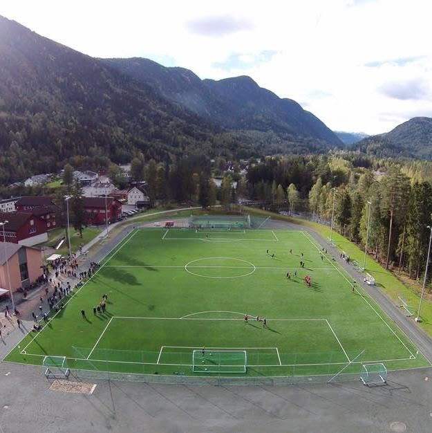
Utgangspunktet
Eit merke teikna for papir
Dagens logo er brei og liggjande, med tynne strekar og berre i svart og kvitt. Han fungerer på eit brevark, men dårleg i profilbilete, brodert på drakt og i lite format. Figuren har heller inga kopling til bygda.
Inspirasjon
Bygda sine eigne former
Bjørnen i kommunevåpenet var startpunktet. Rundt han ligg fjellformene, dragane på Dalen Hotel, veggene på Eidsborg stavkyrkje, brynesteinane og dampbåten Victoria.
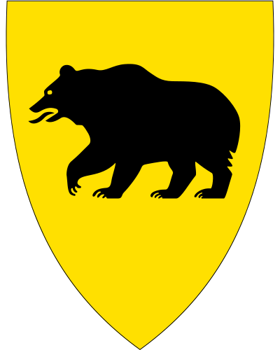
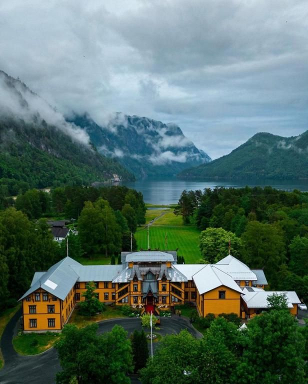
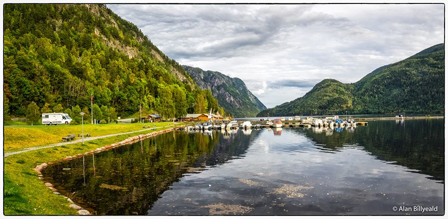
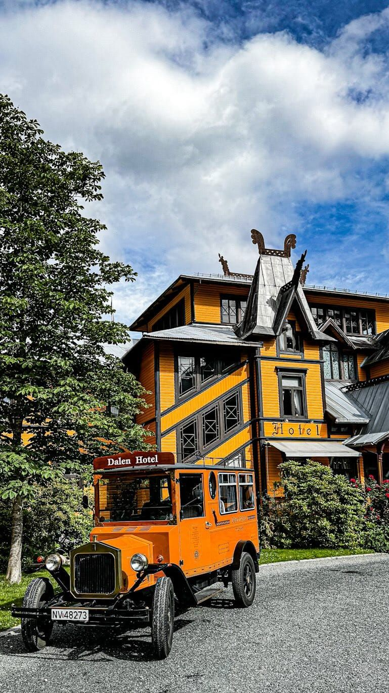
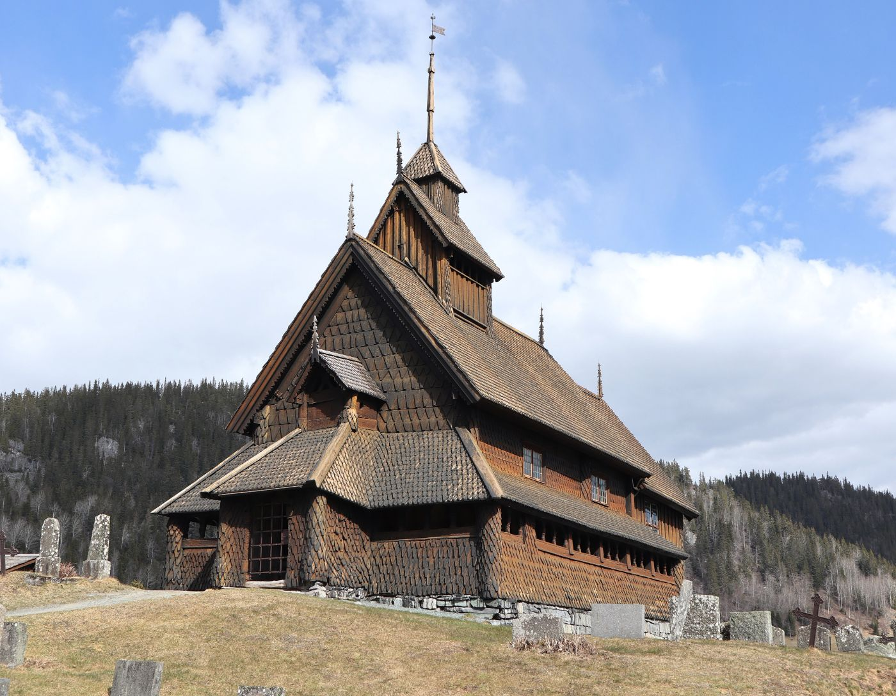
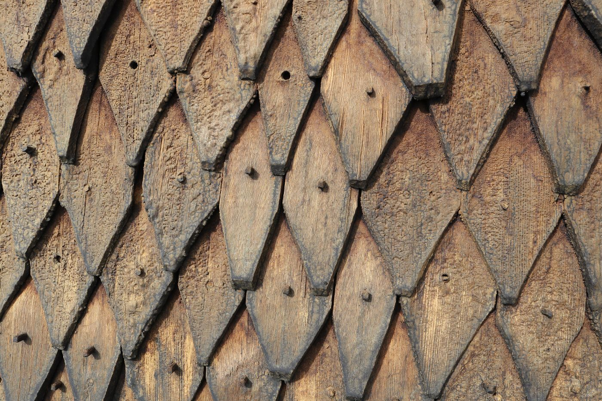
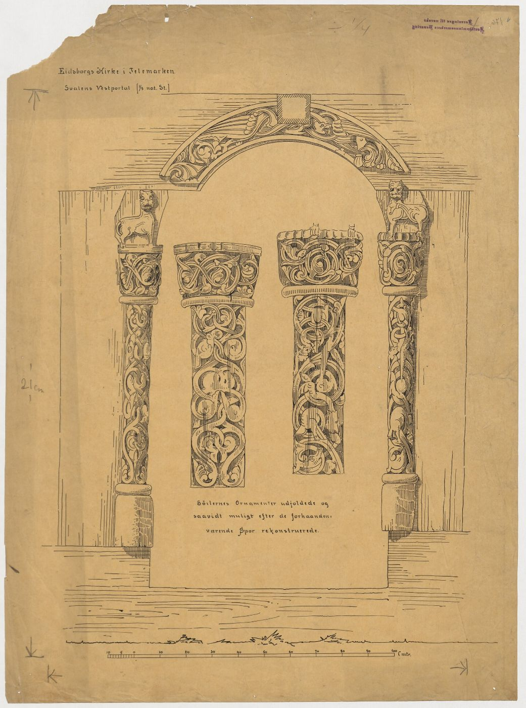
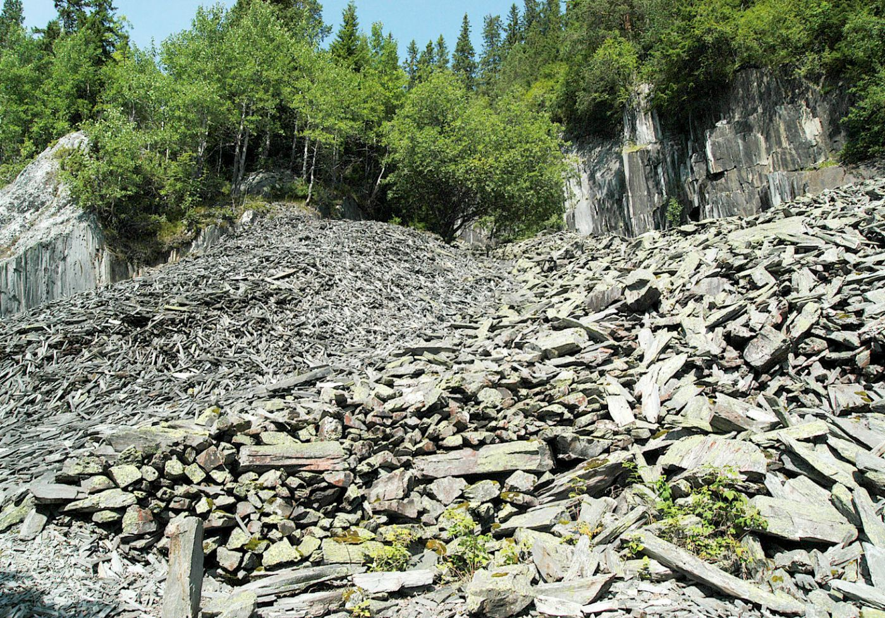
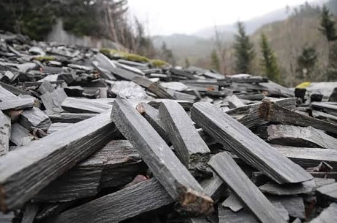
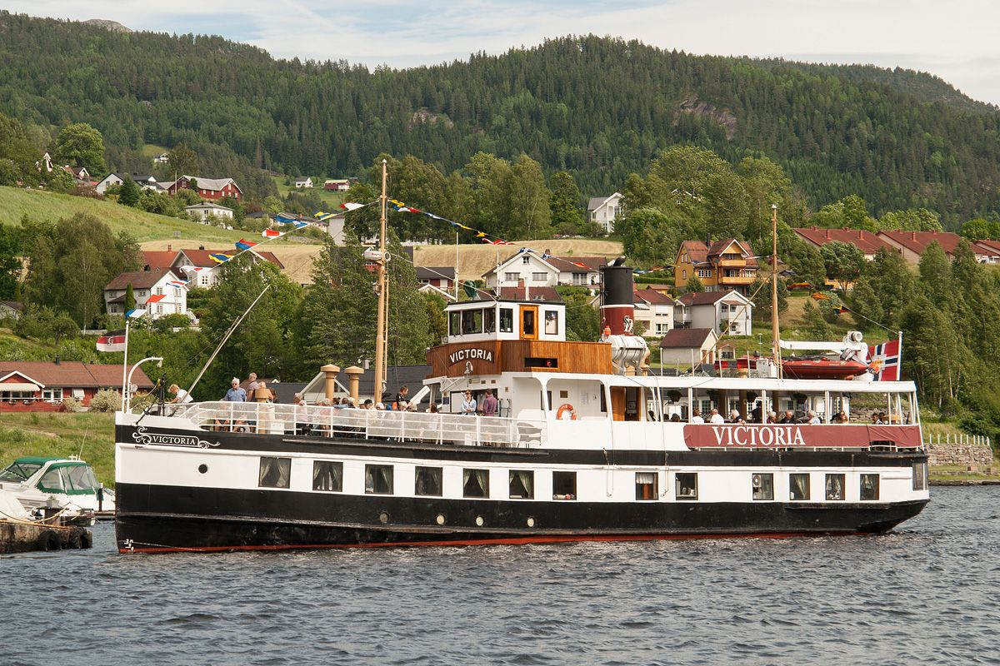
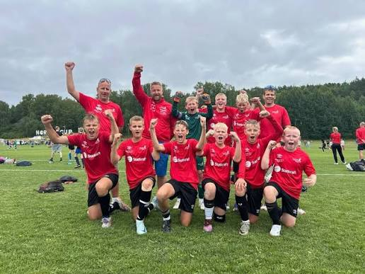
Skisser
Mange vegar inn
Bjørnen er prøvd heil, som hovud og som labb, i sirkel og skjold. Undervegs dukka også andre motiv opp. Dei mest lovande er testa i fleire fargekombinasjonar.
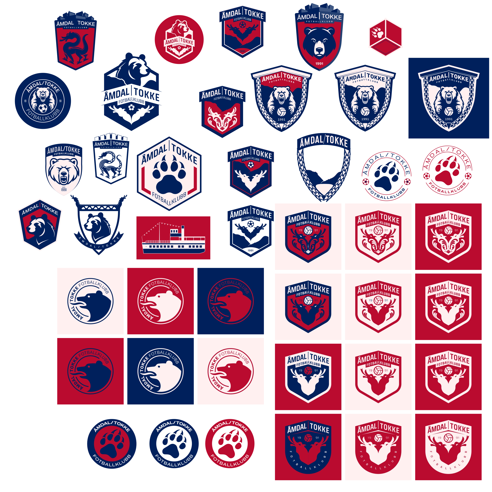